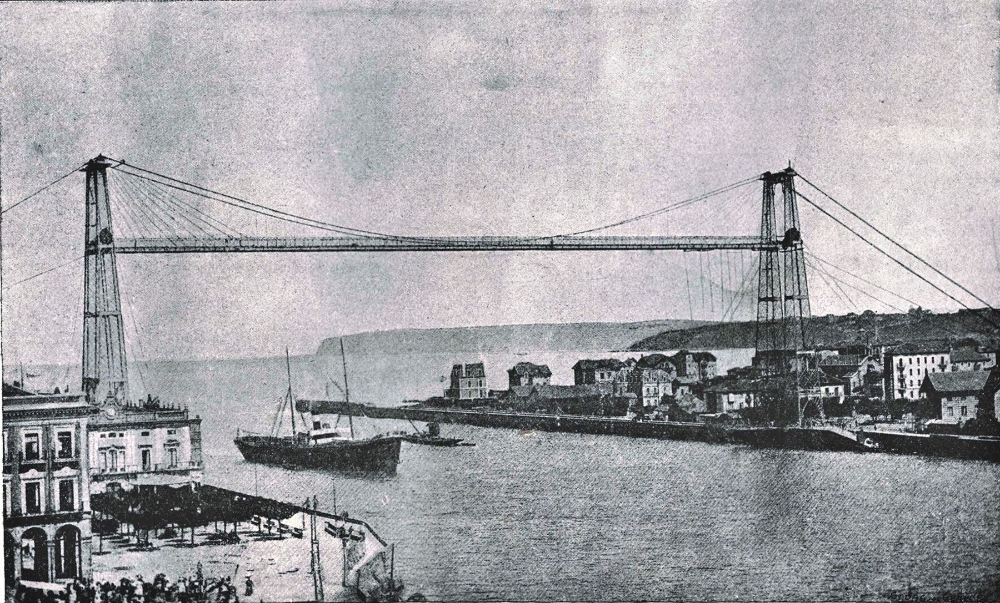
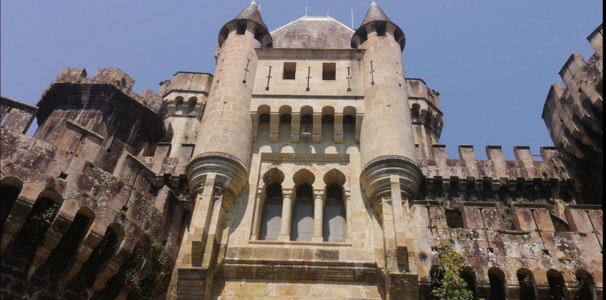

Gestiono proyectos
y construyo con IA.
Sobre mí
Soy Josu Bayer, físico e ingeniero electrónico de Bizkaia. Hice un doble grado en la UPV/EHU y después un máster en IA y tecnología del lenguaje. Me dedico a la gestión de proyectos, y codirigí ENEF 2025, un congreso nacional para 200 estudiantes de física, para el que conseguí más de 80.000 €. Las aplicaciones de abajo las he construido yo y las uso.
¿Necesitas un gestor de proyectos que además entienda de IA? Saluda.

Trabajo
Las filas con flecha abren el código en GitHub.
- Ascension SystemAplicación web2026Un seguidor de hábitos donde las rutinas diarias suben de nivel a un avatar.
- SutelagunAplicación web2026Recetas que recuerdan cada intento y lo que cambió entre ellos.
- ZerrendaAplicación web2026Listas de la compra compartidas en vivo y generadas desde la aplicación de recetas.
- Poltsiko BegieAplicación web2026Un seguidor de gastos con dos libros y reparto de gastos compartidos.
- Begi LuzeAplicación web2026Un seguidor de inversiones con coste FIFO entre plataformas y una tabla para la declaración de la renta.
- Mus TrackerAplicación web2026Registro de torneos y estadísticas del juego de cartas vasco mus.
- EgutegieAplicación web2026Un calendario personal con ciclos rotativos y recordatorios por correo.
- EntzungelaAplicación web y herramienta2026Convierte el PDF de un libro en capítulos de audio y los reproduce sin conexión en el móvil.
Las aplicaciones, tal como se abren en el móvil



Trayectoria
Estudios
Máster en IA y Tecnología del LenguajeMásterUPV/EHU, Donostia2025–27
Física e Ingeniería ElectrónicaDoble gradoUPV/EHU, Leioa2020–26
Talentia SkillsProgramaGobierno Vasco2021–24
PMI KickoffCursoPMI2026
Investigación
Tecnología del lenguajeBeca de investigaciónGrupo IXA, UPV/EHU2025–26
BalistocardiografíaPrácticasGrupo BioRes, UPV/EHU2024–26
Redes informadas por la físicaPrácticasBCAM, Bilbao2024
Simulación de cohetesMiembro del equipoBisky Team, UPV/EHU2023–24
Liderazgo
ENEF 2025, congreso nacional de estudiantes de físicaCodirector, responsable de finanzasEuskadi2024–25
ZIMATEK, asociación de estudiantes de física y electrónicaSecretario, miembro de la juntaUPV/EHU, Leioa2022–25
Grupo estudiantil de la RSEFCofundador, secretarioUPV/EHU2023–25
Divulgación científica en colegiosCocoordinadorBizkaia2023–
Docencia y mentoría
Física y matemáticasProfesor particularBilbao2022–
Alumnado de primer cursoTutor entre igualesUPV/EHU2022–23
Talentia SkillsMentorBizkaia Talent2023–24
Olimpiada de FísicaOrganizador, formadorEuskadi2024–25

Contacto
Bizkaia, País Vasco
bayer.josu@gmail.com
LinkedIn
GitHub, josu-bayer
CV, una página
Hola